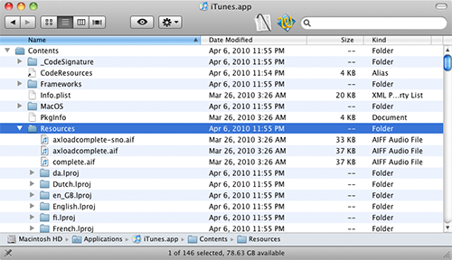
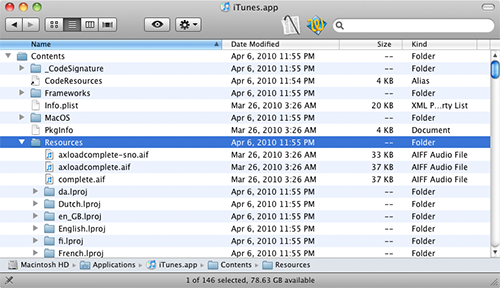
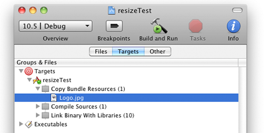

Resources
OS X & iOS
Under OS X and iOS, resources are just normal files which are contained inside the application bundle. If you haven't before, try opening up one of these bundles yourself. Context-click (right-click or control-click) an application in your Applications folder and choose Show Package Contents. Here's the results of doing this with iTunes:
 

Looking around inside of the application bundle, we see a Resources folder inside of Contents. In here we can find all the data files the application depends on. As an example, the first few visible files in the screenshot are audio files iTunes plays as part of its user interface.
A similar structure is maintained for iPhone and iPad apps, and it's the one Cinder uses for these platforms as well.
Adding a Resource
Adding a resource to your OS X or iOS application is straightforward. Let's assume you've got an image you'd like to use in your app. The first step is to add this file as a resource in Xcode. First, pull up your project window in Xcode. Now, context-click the Resources folder and choose Add | Existing Files....

Now select the file you'd like to add to your app from the Open dialog box that follows. After choosing your file, you'll see it listed in the Resources group of your Xcode project. The real magic happens though when Xcode copies these files into your application bundle at build time. To confirm that this will happen, select the Targets tab of your project inspector and reveal your application target under the Targets section. You'll see a build phase called Copy Bundle Resources and inside that will be the resource you've just added.
Using a Resource
Now that we've a resource in the application, how do we actually make use of it with Cinder code? For an OS X or iOS-only application, we simply call the
myTexture = gl::Texture::create( loadImage( loadResource( "Logo.jpg" ) ) );
Surface mySurface( loadImage( loadResource( "Logo.jpg" ) ) );
or perhaps we want to create a QuickTime movie out of a resource called FlyingLogo.mov:
myMovie = qtime::MovieGl::create( loadresource( "FlyingLogo.mov" ) );Pretty easy stuff. On the Cocoa side, that's all there is to it. In general, you can make use of the results of
console() << getResourcePath( "Logo.jpg" ) << endl; Results in something about like this: /Users/andrewfb/Code/cinder/samples/resizeTest/xcode/build/Debug/resizeTest.app/Contents/Resources/Logo.jpg
Resources on Windows
Let's take a look now at how resources are handled on Microsoft Windows. The most noticeable difference relative to OS X is that resources are not stored as individual files, since an EXE does not encapsulate a directory like an OS X application bundle does. Instead, resources are baked into the EXE using a resource compiler, and are stored as binary data. However we can access this binary data in memory using the same
Note: The text which follows is helpful for understanding how Windows resources work under the hood, but we recommend you read and consider the alternative techniques under the Cross-Platform Resources section as well, even if you are writing Windows-only code.
Adding a Resource
A resource under Windows is identified by a pair of an integer ID and a string declaring the type of resource. The integer IDs are generally numbered starting from 128 though there is some flexibility here. Developers also adopt different idioms for the type string. For example, in the Cinder samples you might see GLSL as the type string for any OpenGL GLSL code stored as resources. In general developers will use a series of preprocessor #define's to create a list of unique IDs, and these should be defined in a header file which we typically create as include\Resources.h:
// [in Resources.h]
#pragma once
#define RES_LOGO_ID 128
#define RES_SPLASHSCREEN_ID 129
#define RES_THEME_MUSIC 130
Next, we will create a Resources.rc file, which will tell the compiler which resources we'd like to be included in our app. The structure of this file is a series of lines beginning with the unique resource ID (which we defined in Resources.h), then a string declaring the resource type (again, this can be anything, but it's good to adopt a convention like assigning IMAGE to all of your image files) and last, the file path relative to the .rc file itself. Note that these files are C-style double-quoted strings and consequently, any backslashes must be doubled to distinguish them from escaped characters. The resource compiler walks this file, baking the data of each cited resource into the final EXE. A normal Resources.rc file might look like this:
Resources.rc
// [in Resources.rc]
#include "..\include\Resources.h"
RES_LOGO_ID IMAGE "..\\resources\\Logo.jpg"
RES_SPLASHSCREEN_ID IMAGE "..\\resources\\Splashscreen.png"
RES_THEME_MUSIC_ID MP3 "..\\resources\\Theme.mp3" If it's not already part of your project, you'll need to add Resources.rc to your Visual C++ project. You can do this by right-clicking the Resources filter, choosing Add | Existing Item... and navigating to Resources.rc. Per the screenshot at the top of this document, we generally recommend storing this file in the same directory as your Visual C++ project, though that is not strictly necessary.

Using a Resource
So now our app has its resources baked in, but how do we use them? For Windows-only applications, we call the variant of
myTexture = gl::Texture::create( loadImage( app::loadResource( RES_LOGO_ID, "IMAGE" ) ) );
Surface mySurface( loadImage( App::loadResource( RES_SPLASHSCREEN_ID, "IMAGE" ) ) );Cross-Platform Resources
As we've seen, OS X and Windows handle resources slightly differently, but Cinder provides some tools which can simplify these differences. The most straightforward way to use the same code on both platforms is to call the variant of
app::loadResource( "Logo.jpg", RES_LOGO_ID, "IMAGE" );However, Cinder provides some convenient capabilities which not only simplify your application code, but can consolidate the definition of the resources themselves. Let's continue the Logo.jpg example. We'll start with the most changed portion, which is the structure of Resources.h
// [in Resources.h]
#pragma once
#include "cinder/CinderResources.h"
#define RES_LOGO CINDER_RESOURCE( ../resources/, Logo.jpg, 128, IMAGE )You'll notice a couple of changes. The first is the inclusion of the file "cinder/CinderResources.h". This file defines the CINDER_RESOURCE macro, which breaks down as follows:
CINDER_RESOURCE( relative path to the parent of the resource, file name of the resource, Windows integer ID, Windows type )
As you can see, we use this macro to define a resource named RES_LOGO. Its path (relative to the Resources.rc file) is ../resources/Logo.jpg, which we split into the parent and the name of the file itself with the macro. And finally, we assign our Windows ID/type combination, 128 for the ID and IMAGE for the type string. Should you need to define several resources, make sure each one is defined on its own line, and the last ends with a carriage return.
Next, we'll look at our redefined Resources.rc file designed to make use of this macro:
Resources.rc:
#include "..\include\Resources.h"
RES_LOGOThis file has been simplified by our new CINDER_RESOURCE macro. We simply write the name of the resource we want included in our .exe. Make sure each resource has its own line when you have multiple resources, and don't forget the carriage return on the last line.
On the OS X side of things, you'll still include your resource in the Resources group of your Xcode project, and confirm its presence in the Copy Bundle Resources build phase to be safe.
Finally, let's look at how our application code has changed:
#include "Resources.h"
...
myTexture = gl::Texture::create( loadImage( app::loadResource( RES_LOGO ) ) );
It's about the same, except now we simply pass the resource name to
That's all there is to using cross-platform resources. It can be a bit of a pain to setup initially, but it's easy to maintain once you've got it going. And while you can use either style of resource definition, we prefer the CINDER_RESOURCE technique since it's less error-prone and makes for slightly more legible application code.